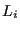
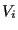
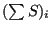
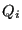
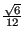
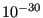

In this routine the quality of each element is determined. To this end the
ratio of the largest edge 
to the radius of the inscribed sphere is used. One can prove that the radius of the inscribed sphere of a
linear tetrahedral is three times the volume 
divided by the sum of the area of
its faces

[31]. Therefore, the quality 
for element  can be written as:
can be written as:
The factor

is such that the quality of an equilateral
tetrahedron is 1. For all other tetrahedra it exceeds 1. The larger the value,
the worse the element. The cut-off of 
was introduced to avoid
dividing by zero or getting a negative value.